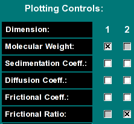

| Fitting Controls:
|
 |
Here you can define the 2 dimensional grid, the resolution,
select baseline fitting and monitor the progress of the fit.
-
Lower/Upper Limit (s): This controls the
s-value range examined in the spectrum analysis. If the
2-dimensional spectrum analysis was started from the van Holde - Weischet
analysis window, these values will be initialized to reasonable values,
otherwise they will need to be manually adjusted by the user. The larger
the range, the more points will be needed to cover a sufficiently narrow
grid for the analysis.
- Increments (s): This value controls the number of divisions made
in the s--value range.
- Lower/Upper Limit (f/f0): This controls the frictional ratio range
examined in the spectrum analysis. The default setting is to search
a space between an f/f0 range between 1 and 4. The larger the range,
the more points will be needed to cover a sufficiently narrow grid for
the analysis. Globular proteins often can be fitted with values less
than 2.5. Random coil and DNA molecules, as well as aggregates often
need higher f/f0 values.
- Increments (f/f0): This value controls the number of divisions
made in the f/f0 ratio range.
- Fit pos/neg baseline?: If you want to fit for a positive or
negative linear baseline contribution, click one of these checkboxes. Only
one checkbox can be selected, since the contributions from each are
linearly dependent. Adding this fitting parameter will slightly increase
the memory required for the fit.
- Est. Memory (MB): The program attempts to estimate the required
RAM memory to complete the analysis. The amount of memory needed depends on
the number of scans included in the fit, the length of the column, the
resolution setting during data acquisition, the number s and f/f0 divisions,
and whether a baseline component is fitted. It is recommended to maintain
the memory requirement about 50% below the available physical memory of the
operating system to assure that other applications receive sufficient
resources to execute. It is possible to use fewer increments for s
or f/f0
- Iteration: This indicates the current iteration being
performed. The iterations shown here are cumulative, all iterations
performed from all optimization methods will be added up and shown
here. This number is reset to 1 when the Uniform Grid
method is chosen.
- Old Variance: The variance from the previous fit (may contain multiple iterations)
- new Variance: The variance from the fit that just completed
- Improvement: The improvement (difference) between the previous and current fit's variance
- Status: This is a copy of the status indicator in the 2-dimensional spectrum analysis' main window.
|
|
Plotting Controls:
|
|  |
The plotting controls allow you to customize the 3-dimensional plot of
the fitting results. You have five different variables that can be plotted
against each other in a 3 dimensional plot,
where the third variable defines the concentration (the z-axis). Each peak
in this plot represents one solute present in the mixture, where the height
of each peak is proportional to the relative signal the solute produces in
the experiment. Each of the five variables can be plotted against any one
of the others, just not against itself. By default, the molecular weight
is plotted against the frictional ratio. In that plot the approximate
(non-)globularity of each molecular weight species can be seen.
|
| Control Buttons:
|
 |
These buttons allow you to control the fitting and plotting process
- Help: Show this help file.
- Cancel: Cancel this process and exit the 2-dimensional analysis
control window
- start Fit/Stop Fit:Start the currently selected optimization
method. Once the fit is started, this button will change text to "Stop Fit",
so that clicking on it will interrupt the current fitting session.
- Plot Results: Show the results by plotting all applicable graphs. In addition
to the 3-dimensional spectrum analysis plot, the
program will update the residuals and overlay plots, in
the main window of the 2-dimensional spectrum analysis, as well as the red/green residuals bitmap plot.
- Save Results: Save the data analysis report and all plots for inclusion
into the velocity report.
- Automatically Update Plot: If this control is selected, the program
will automatically update the 3-dimensional
spectrum analysis plot after each completed optimization run. This allows
the user to follow changes in the solute distribution pattern during optimization
more easily.
|
| Optimization Method Controls:
|
 |
Here you can select the optimization method used for the fit.
- Uniform Grid: This method builds a uniform 2-dimensional
grid with the dimensions specified in the fitting controls. Each
repetition will shift the grid such that the number of iterations are
an equally distributed square of the number of repetitions selected.
Results from all iterations are saved and comined in one or more
final iterations. Therefore the total number of iterations performed
in the Uniform Grid method will always be at least the square of the
repetitions selected here, plus 1 iteration. If the number of solutes
exceeds the number of allocated grid points, this calculation will be
split up into multiple iterations, and then the number of iterations
may be larger. Therefore, if you select 3, there will be at least 10
iterations performed, possibly 12 or more. For 5 repetitions, at least
26 iterations will be performed, but possibly 28 or more. This method
has always to be run first before any other method can be run. It does
not use the previously calculated grid as input, but is set up according
to the fitting controls only.
- Local Uniform Grid: The existing grid from any previous
run is further optimized by this method. This method will subdivide the
previous grid by the number of grid points allocated in the previous grid
(the product of s and f/f0 resolution). The
"Scaling Factor:" determines the spread of the grid beyond the
value of the solute, which is of course a point value. By making it large,
a larger area is covered more coarsly. A smaller value will cause a more
fine grained mesh to be calculated closer to the solute's grid value.
A good default value is around 0.3-0.5. The units are in the scale
shown on the screen. The number of "Repetitions:" defines how
often this process is repeated. The "Scaling Factor 2:" defines
how much the Scaling Factor from the previous iteration is scaled back,
to allow a refinement to take place. A good default value is slightly
lower than 1.0. A value of 1 will not change at all, a value larger than
1 will increase the coarseness and spread of the grid with each iteration.
- Random Local Grid: This method generates a random grid
about the solute point. Use the "Standard Deviation:" control
to set the width of the random distribution. There is no scaling of
previous iterations. A different random distribution is applied for each
"Repetitions:" selected. The units are in the scale shown on
the screen.
- Solute Coalescing: This function will combine two adjacent
solutes into a single solute whose value will be the average of the
Euclidean distance between the two components. The "Coalescing
Distance:" controls the maximum distance between which neighboring
solutes are going to be coalesced. The larger this value, the further
away the solute can be from each other and still get coalesced. The units
are in the scale shown on the screen.
- Clip lowest Conc. Solute: This routine will find the
lowest concentration solute and eliminate it from the distribution
and recalculate the grid distribution without this solute present. The
"# of Clipped Solutes:" determines how many lowest concentration
solutes are eliminated from the distribution. If the "# of Clipped
Solutes:" is set to 3, the three lowest concentration solutes will
be removed from the distribution.
- Regularization: Perform maximum entropy regularization on
the distribution using the selected "Regularization Factor:".
|

{kind=link}
{kind=link}
{kind=link}